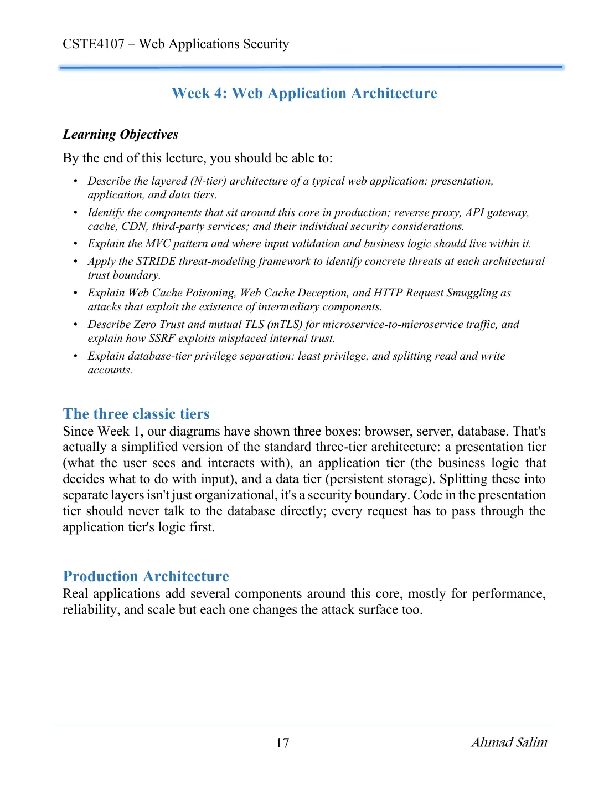
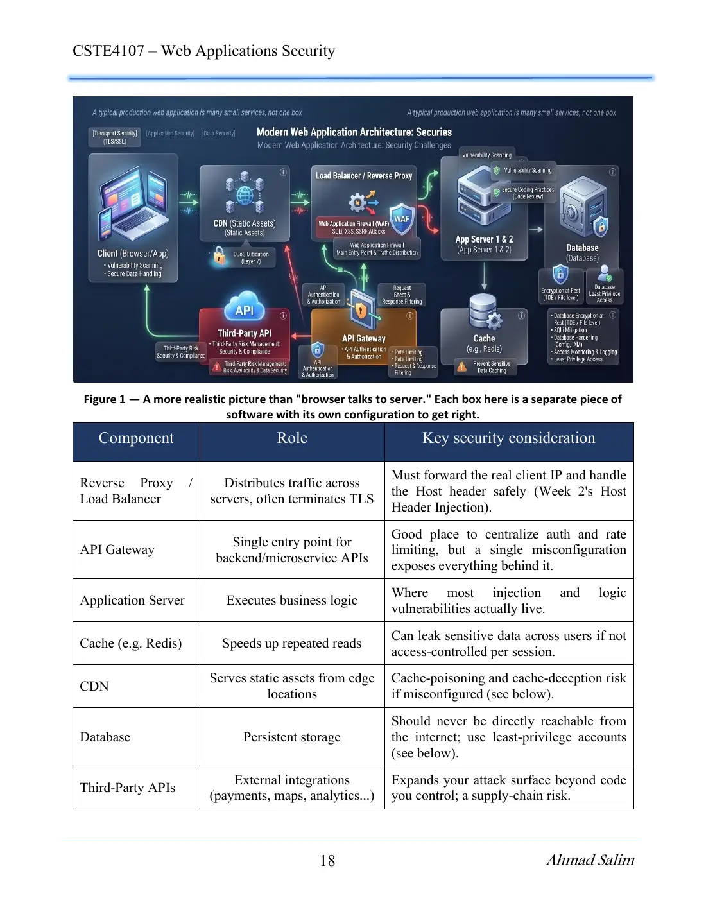
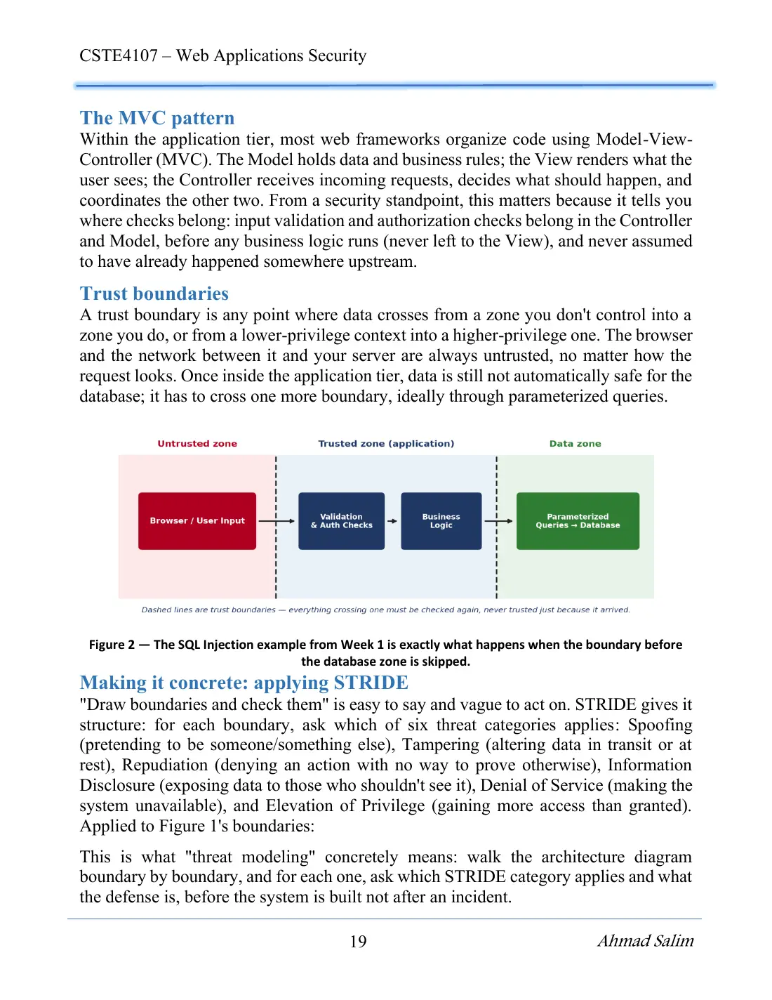
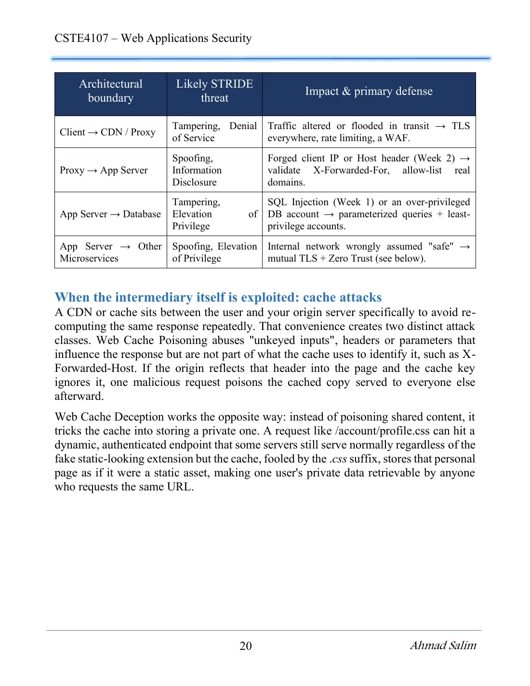
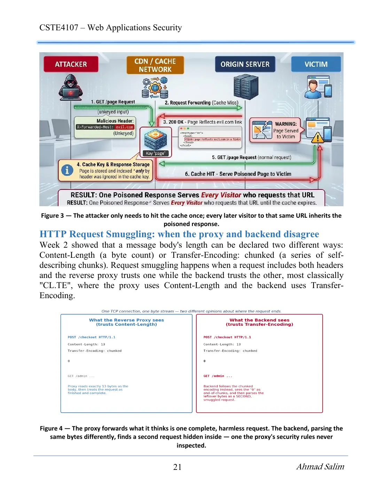
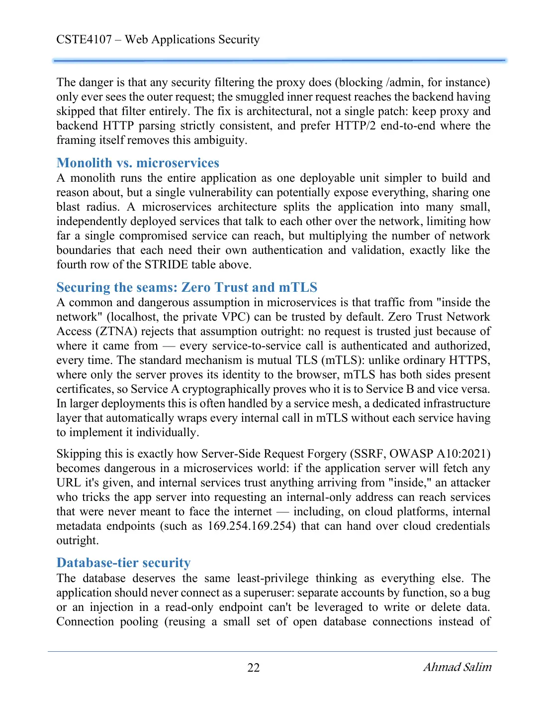
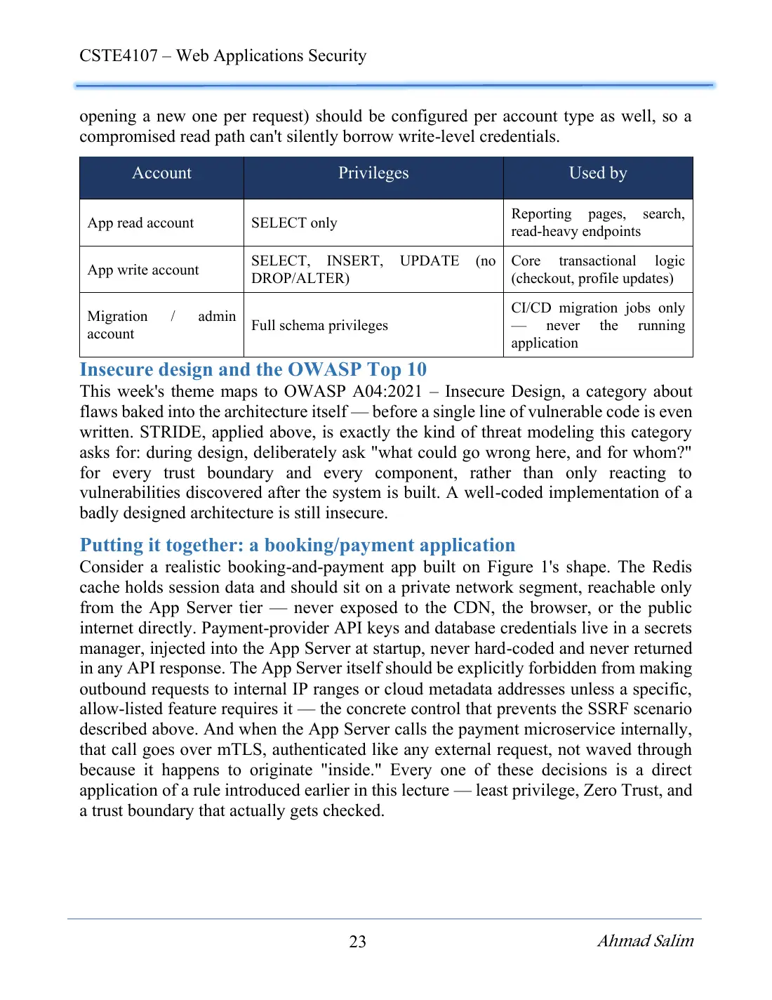

7 pages · 760 KB Open original PDF ↗
Σ Read the summary: الطبقات والجدران في معمار الخلّانDefinitions, Q/ questions and comparison tables ✎ Take the mock exam for this lectureTimed, sectioned like the real exam, with model answers and marks ▶ Try it as an interactive labRun the commands in a simulator, check each step, then take the quiz





